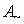
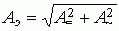
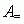
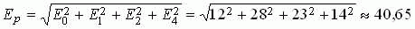
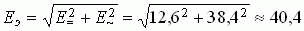

составляющих напряжений и токов и ваттметра Wt) и занести их в табл. 16.1.
составляющих напряжений и токов и ваттметра Wt) и занести их в табл. 16.1. Задание 3. Собрать на рабочем поле программы EWB схему цепи (рис. 16.3) (или открыть файл LR16.ewb).

Примечание. При выполнении работы в среде MS8SD открыть файл Circbits\Lr8.ms8.
В схему включить идеальные источники напряжения е0, е1(t), е2(t) и е4(t), ваттметр W для измерения активной мощности на входе схемы и осциллограф для наблюдения формы периодического несинусоидального тока i1(t) (канал А) и напряжения u(t) = е(t) (канал В). Показание вольтметра Wt 1 В соответствует 1 Вт.
Согласно варианту установить параметры элементов схемы и режимы работы измерительных приборов (вольтметров V1 и V2 - режим AC, внутреннее сопротивление 1 МОм; вольтметра Wt - режим DС, внутреннее сопротивление 1 МОм; амперметров А1, А2 и А3 - режим АС, внутреннее сопротивление 1 мОм). Пример установки параметров пассивных и активных элементов схемы и осциллографа для варианта N = 36 показан на рис. 16.3 и рис. 16.4.
Запустить программу EWB или MS8SD. Снять показания приборов (значения переменных составляющих напряжений и токов и ваттметра Wt) и занести их в табл. 16.1.
Примечание. Вольтметры и амперметры показывают действующие значения только переменных  составляющих напряжений и токов. Для измерения постоянных  составляющих ЭДС, напряжений и токов необходимо на приборах V1 и V2; А1, А2 и А3 установить режим DC и занести их показания в табл. 16.1.
составляющих ЭДС, напряжений и токов необходимо на приборах V1 и V2; А1, А2 и А3 установить режим DC и занести их показания в табл. 16.1.

Рассчитать действующие значения ЭДС Е, напряжения UС и токов (I1, I2, I3) ветвей по соотношениям , где  и  - измеренные постоянная и переменная составляющие соответствующей электрической величины. Например, рассчитанное действующее значение ЭДС источника (см. рис. 16.3)
- измеренные постоянная и переменная составляющие соответствующей электрической величины. Например, рассчитанное действующее значение ЭДС источника (см. рис. 16.3)
 В,
а измеренное значение ЭДС  В.
Сравнить полученные результаты расчёта электрических величин с экспериментальными данными.